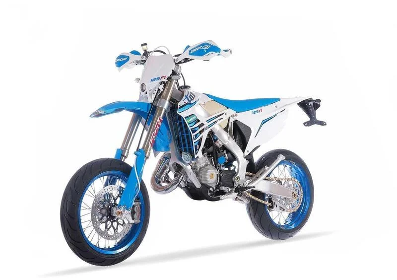

MIGLIOR PRODOTTO IN COMMERCIO

Il Tm smr 125 è la moto perfetta per avere un mix di divertimento e comfort. Presenta un motore monocilindrico a 2 tempi,
che offre una potenza vivace e una grande reattività. Questi motori sono apprezzati per la loro risposta pronta e la
sensazione di potenza su moto leggere. Una delle parti migliori di questa moto sono i cerchi, marca excel con colorazione base in blu anodizzato.
È dotata di freni a disco di grande diametro sia all'anteriore che al posteriore, per una potenza frenante efficace e controllata.
I freni sono progettati per offrire prestazioni da pista anche sulle strade cittadine. Il design è tipico delle supermotard, con una posizione di guida rialzata
per una migliore visibilità e controllo. La carrozzeria è slanciata e sportiva, con colori vivaci e grafiche accattivanti.
Questo modello è ideale per gli appassionati di supermotard che cercano una moto ad alte prestazioni, agile e divertente da guidare sia su strada che su pista.
SCHEDA TECNICA
Nome: Tm smr 2022
Cilindrata: 124,7cc
Motore: 2 tempi
Cambio: 6 marce
Utilizzo: strada
Capacità serbatoio: 8.5 l
Cavalli: 34 cv
Emissioni: euro 5
Peso: 90 kg
Prezzo: 9700 euro